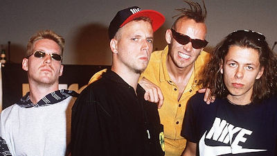
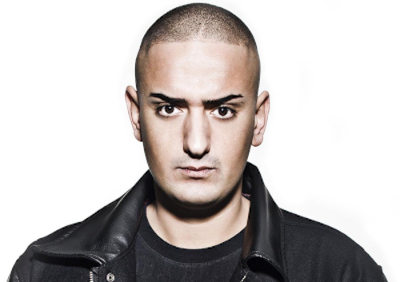
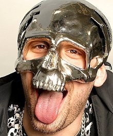
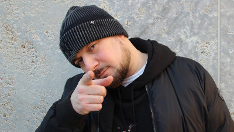
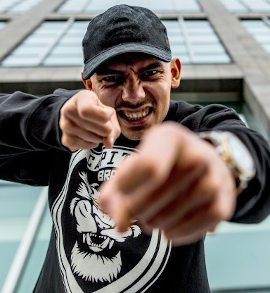

Geschichte und Entwicklung des Deutsch-Rap
Durch die Kommerzialisierung des Rap in den Vereinigten Staaten gelangten Rap und Hip-Hop Anfang der 1980er-Jahre auch nach Deutschland und verbreiteten sich durch Schallplatten, Filme und vor allem durch die in Deutschland stationierten amerikanischen Soldaten. Anfang der 1980er-Jahre entstand in Deutschland eine erste zunächst englischsprachige Hip-Hop-Welle.
Als erste deutschsprachige Hip-Hop-Veröffentlichung gilt Rapper’s Deutsch von G.L.S.-United, eine im April 1980 erschienene Parodie des Hits Rapper’s Delight.
Nachdem diese Welle Mitte der 1980er wieder abgeflaut war, begannen Mitglieder der Subkultur Gleichgesinnte zu suchen und veranstalteten Hip-Hop-Jams. Diese waren als Partys in Jugendzentren oder zu Hause organisiert, zu denen Hip-Hop-Interessierte aus der Region oder ganz Deutschland kamen und vor allem Sprayer, Breaker, DJs und Rapper anzog. Diese traten im Wettbewerb gegeneinander auf und tauschten sich aus. Durch diese Veranstaltungen bildeten sich Netzwerke, die die Community vergrößerten. Die ersten Rapper fingen zunächst an, in englischer Sprache und über amerikanische Beats zu rappen. In der deutschen Sprache zu texten galt bei ihnen als Tabu und „altmodisch“.
Torch, Mitglied von Advanced Chemistry, begann ohne Wissen der restlichen Bandmitglieder auf einer dieser Jams Ende der 1980er Jahre in deutscher Sprache zu freestylen. Sein Vorgehen fand beim Publikum Zustimmung, vermutlich da sie ihn verstanden und sich dadurch stärker angesprochen fühlten. Von da an rappte er immer häufiger auf Deutsch und sein Name wurde innerhalb der Szene bekannt.
In den 1990er Jahren etablierte sich Rap in der populären Kultur und weitere Rapper tauchten aus dem Untergrund auf. So etwa die Band Die Fantastischen Vier, vier Stuttgarter, die mit Nonsensetexten und „Spaßrap“ aber auch mit niveauvollen philosophischen Texten in die Charts einstiegen. Ein Jahr später belegten sie mit ihrer Single Die Da?! im Jahr 1992 Platz zwei der Charts. Ab 1993 lief das erste deutschsprachige Hip-Hop-Fernsehmagazin „Freestyle“ beim damals neuen Musiksender VIVA.
Bis 1995 tauchten keine Deutschrap-Alben mehr in den Charts auf. Rap entwickelte sich im Untergrund weiter und spaltete sich in die Neue Schule und die Alte Schule. Die Alte Schule, die Mitbegründer und „Aufbauer“ von Rap in Deutschland, warf der Neuen Schule vor, sie zu übergehen und Hip-Hop nicht ernst zu nehmen. Die Alte Schule hatte eine deutlich politischere Haltung. Dagegen galten die Protagonisten der Neuen Schule, zu der unter anderem Fettes Brot und Der Tobi und das Bo zählten, als Bands, die nur den Anspruch hatten, Spaß zu bringen. Sie rappten über scheinbar belanglose Dinge und hatten vorrangig Texte mit Wortwitz und Ironie.
In den Jahren von 1995 bis 2000 erreichte der deutschsprachige Rap den Zenit und war Bestandteil der nationalen Popszene. Es erschienen immer mehr Veröffentlichungen und der Markt wurde regelrecht überschwemmt.
In der Folgezeit erreichten generell in Deutschland lebende Immigranten Einfluss auf die deutsche Hip-Hop-Szene, die Themen wie Arbeitslosigkeit, Chancenlosigkeit der Jugend, Rassismus, aber auch Straßen- und Drogenkriminalität artikulieren. Im Folgenden führte der starke Einfluss von Migranten auf den deutschsprachigen Hip-Hop zu einem Einfließen vieler z. B. arabischer, türkischer oder serbischer Wörter in die deutsche Jugendsprache.
Mit der flächendeckenden Verbreitung des Internets und dem Aufkommen von Smartphones stieg die Popularität des Raps in Deutschland analog zum US-Rap immens. Ein Blick auf die deutschen Charts genügt, um festzustellen, dass Rap bzw. Hip-Hop auch in Deutschland angekommen sind. Künstler wie Capital Bra, Luciano oder Loredana erreichen konstant die Top-10 und genießen mittlerweile große Bekanntheit im Land.
Deutsche Rap-Größen von heute
Einige dieser Bekanntheiten werden nun im Folgenden vorgestellt:
|
 |
|
 |
|
|
 |
Quellen
Sido-Bild: https://www.bravo.de/sido-rockt-deutschland-vier-shows-einem-tag-246319.html
Kool Savas-Bild: ©Ingmar Bock, https://www.sputnik.de/podcasts/interviews/audio-971790.html
Kollegah-Bild: ©Ralf Succo, https://www.klatsch-tratsch.de/aktuelles/kollegah-so-viel-geld-hat-er-also-frueher-verdient-432501/
Capital Bra-Bild: ©dieserbobby/Two Sides, https://www.spiegel.de/kultur/musik/capital-bra-der-rapper-steigt-bei-bushidos-plattenfirma-aus-a-1249496.html